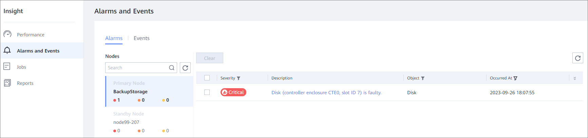
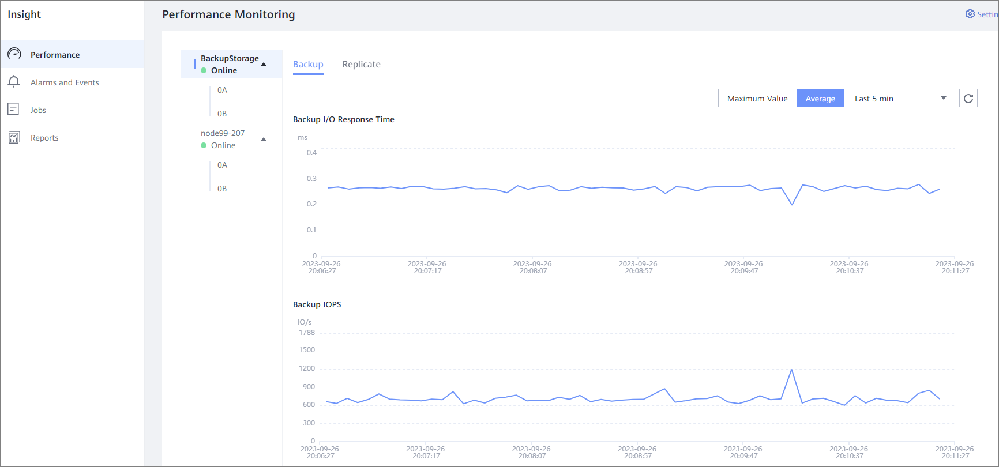
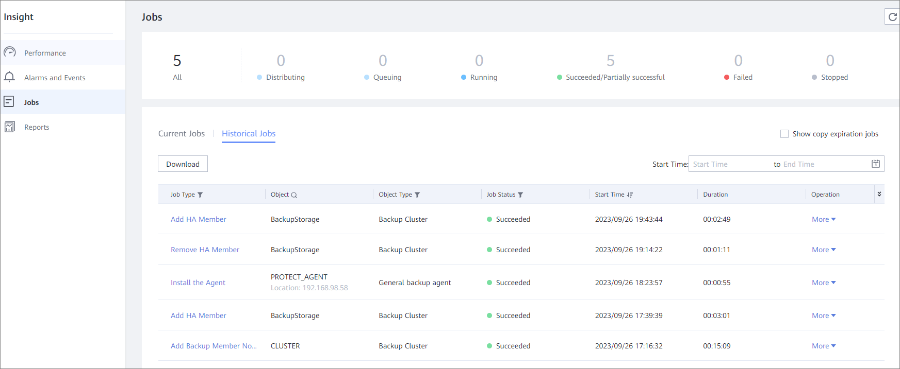
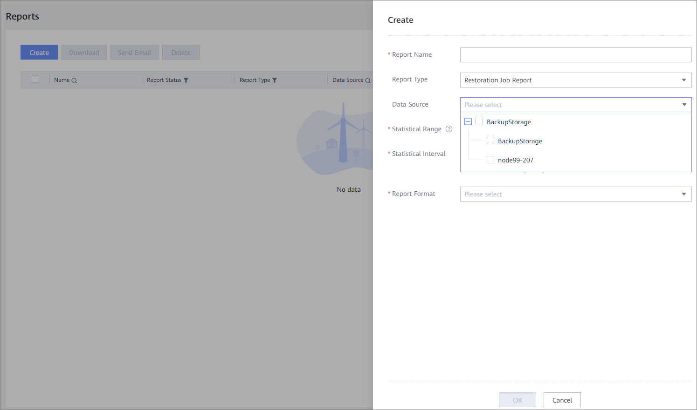

After the cluster HA feature is configured, copies can be stored on the backup storage unit corresponding to the member node. You can also monitor the status of the standby node or the member node on the active node. For example, you can monitor the alarms, performance, and jobs of the member node on the active node, or generate reports by member node.
After the cluster HA feature is configured, you can specify the target location of backup copies in the SLA during resource backup.
Two replication modes are supported: Cross-domain and Intra-domain. After the cluster HA feature is configured, you can select a backup storage unit group for intra-domain replication to implement automatic switchover of the target location of replication copies.
Choose . On the displayed page, select a node and view the alarm information.

Choose . On the displayed page, select a node and view the performance information.

Choose , click on the right of the displayed page, select Nodes to view the jobs of the active node and member nodes.

Choose . On the displayed page, create a global report or create a report by member node.
